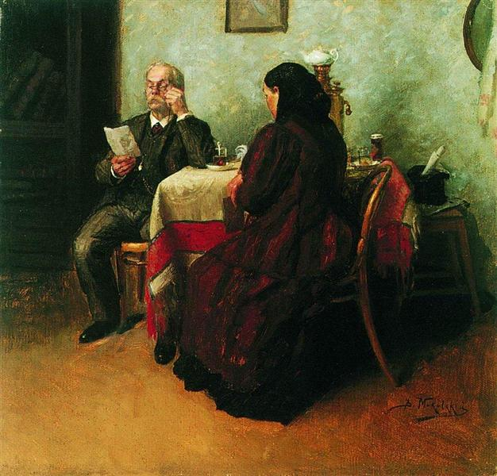

Reading (a note, a letter, a telegram)

In Tolstoy’s Anna Karenina, the motif of reading refers to repeated scenes in which characters receive, decipher, or interpret written messages including notes, telegrams, and even coded initials. Tolstoy’s concern is not only with the existence of written communication but, more specifically, with the act of reading these messages. Throughout the novel, a character’s response to a message reveals the condition of a relationship as powerfully as a live conversation could. Perhaps even more powerfully, reading becomes a test of intimacy, exposing betrayal, confirming mutual connection, or aggravating emotional isolation. The reader’s interpretation of and reaction to these messages are therefore crucial to the novel.
The motif appears almost immediately in the Oblonsky household, where Dolly has discovered Stiva’s affair by reading “the unfortunate note.” When Stiva enters, Dolly is “sitting motionless with the note in her hand, and looking at him with an expression of horror, despair, and anger” (Tolstoy 4). This note, which reveals Stiva’s affair, sets the tone not only for the chapter but for the whole novel. Notably, Tolstoy emphasizes Dolly’s pain and quietness, allowing her physical reaction to the note to characterize the scene. For Dolly, this written proof makes ignorance towards Stiva’s affair impossible; the note carries devastating moral and familial weight. This motif develops in a different, more positive direction with Levin and Kitty's reunion. At a gathering in Part 4, they communicate through the initial letters of sentences spelled out with blocks. Levin quietly forms the question, “When you answered me ‘that cannot be,’ did that mean never or then?” and thinks, “There was no likelihood that she could make out this complicated sentence” (Tolstoy 400). However, Kitty understands him exactly, placing this interaction in sharp contrast with Dolly’s reading of the "unfortunate note.” Here, this message is incomplete — and likely incomprehensible — to anyone else, but it is perfectly comprehensible to those in love. Kitty’s ability to read Levin’s initials demonstrates that they share an emotional language that transcends ordinary conversation. This moment is private and playful, building intimacy instead of destroying it. More generally, this scene provides an example of how Levin and Kitty’s communication consistently contrasts with Anna and Vronsky’s. Anna and Vronsky’s relationship provides a tragic version of this motif. In Part 7, Anna reads Vronsky’s brief telegram, which says, “I cannot be home before ten o’clock” (Tolstoy 763). On the surface, the message is practical and inoffensive. Anna, however, reads it with jealousy and despair. Thus, her tragedy hinges not on Vronsky’s message but on how she interprets it. She pictures him with his mother and Princess Sorokina, “revelling in her suffering” (Tolstoy 763). Unlike Kitty, who can decipher what is barely communicated in the first place, Anna misreads a plain message. The telegram’s brevity leaves space for her suspicions. The development of this motif therefore reflects the status of relationships throughout the novel. Dolly’s reading uncovers betrayal, Kitty’s confirms love, and Anna’s produces a lethal misinterpretation. In each case, Tolstoy makes reading an action with significant consequences. A useful literary parallel is Flaubert’s Madame Bovary, another adultery novel in which reading shapes both desire and delusion. Sarah Hurlburt’s “Educating Emma” argues that Emma Bovary’s early education produces a “selective, escapist manner of reading,” a pattern that helps explain how she interprets love through fantasy and not reality (Hurlburt). Similarly, one Michigan Quarterly Review essay describes Madame Bovary as an avid reader whose imagination is filled with romantic literary images. Additionally, the article notes that Flaubert also includes instances of failed readings of letters. Similar to Anna Karenina, written messages do not accomplish true understanding in these moments (Lee).
Works Cited
- Hurlburt, Sarah. "Educating Emma: A Genetic Analysis of Reading in Madame Bovary." Nineteenth-Century French Studies, vol. 40, no. 1/2, Fall–Winter 2011–2012, pp. 81–95. JSTOR.
- Lee, Nania. "For the Love of Emma Bovary." Michigan Quarterly Review, University of Michigan, July 2011.